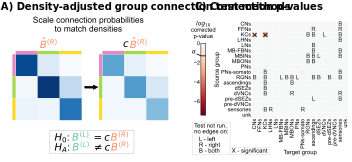
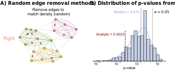

Density-adjusted group connection test
Density-adjusted group connection test#
import datetime
import time
import matplotlib as mpl
import matplotlib.pyplot as plt
import numpy as np
import pandas as pd
import seaborn as sns
from graspologic.simulations import sbm
from pkg.data import load_network_palette, load_node_palette, load_unmatched
from pkg.io import FIG_PATH, OUT_PATH
from pkg.io import glue as default_glue
from pkg.io import savefig
from pkg.perturb import remove_edges
from pkg.plot import (
SmartSVG,
draw_hypothesis_box,
heatmap_grouped,
networkplot_simple,
plot_pvalues,
set_theme,
)
from pkg.stats import compute_density, stochastic_block_test
from svgutils.compose import Figure, Panel, Text
from tqdm import tqdm
DISPLAY_FIGS = False
FILENAME = "adjusted_sbm_unmatched_test"
OUT_PATH = OUT_PATH / FILENAME
FIG_PATH = FIG_PATH / FILENAME
def glue(name, var, **kwargs):
default_glue(name, var, FILENAME, **kwargs)
def gluefig(name, fig, **kwargs):
savefig(name, foldername=FILENAME, **kwargs)
glue(name, fig, figure=True)
if not DISPLAY_FIGS:
plt.close()
t0 = time.time()
set_theme()
rng = np.random.default_rng(8888)
network_palette, NETWORK_KEY = load_network_palette()
node_palette, NODE_KEY = load_node_palette()
neutral_color = sns.color_palette("Set2")[2]
GROUP_KEY = "simple_group"
left_adj, left_nodes = load_unmatched(side="left")
right_adj, right_nodes = load_unmatched(side="right")
left_labels = left_nodes[GROUP_KEY].values
right_labels = right_nodes[GROUP_KEY].values
set_theme()
np.random.seed(888888)
ns = [5, 6, 7]
B = np.array([[0.8, 0.2, 0.05], [0.05, 0.9, 0.2], [0.05, 0.05, 0.7]])
A1, labels = sbm(ns, B, directed=True, loops=False, return_labels=True)
node_data = pd.DataFrame(index=np.arange(A1.shape[0]))
node_data["labels"] = labels + 1
palette = dict(zip(np.unique(labels) + 1, sns.color_palette("Set2")[3:]))
fig, axs = plt.subplots(
2,
2,
figsize=(6, 5),
# constrained_layout=True,
gridspec_kw=dict(wspace=0.25, hspace=0, height_ratios=[2, 0.3]),
)
ytop = 1.05
ybottom = 0.11
xleft = 0.05
xright = 0.68
border_color = "lightgrey"
line1 = mpl.lines.Line2D(
(0.15, 0.95),
(0.4, 0.4),
transform=fig.transFigure,
color=border_color,
linewidth=1.5,
)
# fig.lines = (line1,)
ax = axs[0, 0]
_, _, misc = stochastic_block_test(A1, A1, node_data["labels"], node_data["labels"])
Bhat1 = misc["probabilities1"].values
top_ax, left_ax = heatmap_grouped(Bhat1, [1, 2, 3], palette=palette, ax=ax)
top_ax.set_title(r"$\hat{B}^{(R)}$", color=network_palette["Right"], size="large")
ax.set_title(
"Scale connection probabilities\nto match densities",
fontsize="medium",
x=1.1,
y=1.3,
)
ax = axs[0, 1]
Bhat1 = misc["probabilities1"].values
top_ax, left_ax = heatmap_grouped(0.6 * Bhat1, [1, 2, 3], palette=palette, ax=ax)
top_ax.set_title(
r"$\hat{B}^{(R)}$", color=network_palette["Right"], x=0.55, size="large"
)
top_ax.text(0.94, -1.2, r"$c$", size="large")
# ax.autoscale("off")
ax.annotate(
"",
xy=(0, 1.5),
xytext=(-0.9, 1.5),
arrowprops=dict(
arrowstyle="simple",
shrinkA=5,
shrinkB=10,
facecolor="black",
),
zorder=1,
clip_on=False,
)
from giskard.plot import merge_axes
ax = merge_axes(fig, axs, rows=1)
# ax.set_title("Run group\nconnection test", y=1.1, x=0.6, fontsize="small")
ax.axis("off")
ax.set(xlim=(0, 1), ylim=(0, 2))
draw_hypothesis_box("dasbm", 0.27, 2, ax=ax, yskip=1.2, ypad=0.03)
fig.set_facecolor("w")
gluefig("adjusted_methods_explain", fig)
fig, ax = plt.subplots(1, 1, figsize=(5, 4))
node_data = networkplot_simple(A1, node_data, palette=palette, ax=ax, group=True)
n_select = 10
row_inds, col_inds = np.nonzero(A1)
np.random.seed(8888)
choice_inds = np.random.choice(len(row_inds), size=n_select)
for i in choice_inds:
source_node = row_inds[i]
target_node = col_inds[i]
x1, y1 = node_data.loc[source_node, ["x", "y"]]
x2, y2 = node_data.loc[target_node, ["x", "y"]]
x = (x1 + x2) / 2
y = (y1 + y2) / 2
ax.text(
x,
y,
"x",
va="center",
ha="center",
color="darkred",
fontsize="medium",
zorder=2,
)
ax.set_title("Remove edges to\n match density (random)", fontsize="medium")
ax.set_ylabel(
"Right",
color=network_palette["Right"],
size="large",
rotation=0,
ha="right",
labelpad=10,
)
fig.set_facecolor("white")
gluefig("edge_removal_methods", fig)
n_edges_left = np.count_nonzero(left_adj)
n_edges_right = np.count_nonzero(right_adj)
n_left = left_adj.shape[0]
n_right = right_adj.shape[0]
density_left = n_edges_left / (n_left**2)
density_right = n_edges_right / (n_right**2)
n_remove = int((density_right - density_left) * (n_right**2))
glue("n_remove", n_remove)
rows = []
n_resamples = 500
glue("n_resamples", n_resamples)
RERUN_SIM = False
if RERUN_SIM:
for i in tqdm(range(n_resamples)):
subsampled_right_adj = remove_edges(
right_adj, effect_size=n_remove, random_seed=rng
)
stat, pvalue, misc = stochastic_block_test(
left_adj,
subsampled_right_adj,
labels1=left_labels,
labels2=right_labels,
)
rows.append(
{
"stat": stat,
"pvalue": pvalue,
"misc": misc,
"resample": i,
}
)
resample_results = pd.DataFrame(rows)
resample_results.to_csv(OUT_PATH / "resample_results.csv")
else:
resample_results = pd.read_csv(OUT_PATH / "resample_results.csv", index_col=0)
left_density = compute_density(left_adj)
right_density = compute_density(right_adj)
c = left_density / right_density
glue("c", c, form="0.2f")
stat, pvalue, misc = stochastic_block_test(
left_adj,
right_adj,
labels1=left_labels,
labels2=right_labels,
method="fisher",
density_adjustment=True,
)
glue("pvalue", pvalue, form="pvalue")
left_nodes["inds"] = np.arange(len(left_nodes))
right_nodes["inds"] = np.arange(len(right_nodes))
left_kc_inds = left_nodes.query("simple_group == 'KCs'")["inds"]
right_kc_inds = right_nodes.query("simple_group == 'KCs'")["inds"]
left_cn_inds = left_nodes.query("simple_group == 'CNs'")["inds"]
right_cn_inds = right_nodes.query("simple_group == 'CNs'")["inds"]
left_kc_cn_adj = left_adj[left_kc_inds][:, left_cn_inds]
right_kc_cn_adj = right_adj[right_kc_inds][:, right_cn_inds]
from graspologic.plot import heatmap
fig, axs = plt.subplots(1, 2, figsize=(10, 5))
ax = axs[0]
heatmap_kws = dict(
xticklabels=False, yticklabels=False, cbar=False, cmap="RdBu_r", center=0, square=True
)
ax.set_title("Left")
sns.heatmap(left_kc_cn_adj, ax=ax, **heatmap_kws)
ax = axs[1]
ax.set_title("Right")
sns.heatmap(right_kc_cn_adj, ax=ax, **heatmap_kws)
for ax in axs.flat:
ax.set(xlabel='CNs', ylabel='KCs')
fig.set_facecolor('w')

right_has_kc = right_kc_cn_adj.sum(axis=0) > 0
cn_right_nodes = right_nodes.query("simple_group == 'CNs'").copy()
cn_right_nodes["has_kc"] = right_has_kc
cn_right_nodes.query("has_kc")
| name | neurons | paper_clustered_neurons | left | right | center | sink | partially_differentiated | unsplittable | ipsilateral_axon | ... | pair | pair_id | lineage | axon_output | axon_input | dendrite_output | dendrite_input | _inds | inds | has_kc | |
|---|---|---|---|---|---|---|---|---|---|---|---|---|---|---|---|---|---|---|---|---|---|
| 17019327 | CF ; pDM_right | True | True | False | True | False | False | False | False | False | ... | 11409587 | 508 | DPMpm1_r | 327.0 | 77.0 | 6.0 | 181.0 | 1555 | 51 | True |
| 16339645 | JI_right | True | True | False | True | False | False | False | False | False | ... | 16444552 | 790 | DPLc5_r | 232.0 | 82.0 | 0.0 | 149.0 | 1778 | 274 | True |
| 16405545 | Tomato Vine_right | True | True | False | True | False | False | False | False | True | ... | 12789813 | 589 | DPMpm1_r | 324.0 | 28.0 | 2.0 | 326.0 | 1802 | 298 | True |
| 17438424 | SLP1_right; CM13 lat 9 | True | True | False | True | False | False | False | False | False | ... | 17639784 | 975 | CM13_lat_r | 552.0 | 70.0 | 0.0 | 274.0 | 1813 | 309 | True |
| 5791548 | DALcm d 5; DALcm12 v e 26 right | True | True | False | True | False | False | False | False | True | ... | 15519213 | 696 | DALcm12-v_r | 337.0 | 24.0 | 0.0 | 119.0 | 1974 | 470 | True |
| 5669107 | L ; DALcm12 m lat 4_right | True | True | False | True | False | False | False | False | False | ... | 14073503 | 628 | DALcm12-m_r | 185.0 | 41.0 | 70.0 | 316.0 | 1984 | 480 | True |
| 4575178 | CH ; BAmd1 lineage_right | True | True | False | True | False | False | False | False | True | ... | 17176911 | 912 | BAmd1_r | 195.0 | 66.0 | 0.0 | 126.0 | 2046 | 542 | True |
| 6611100 | H ; DALcm r v ant med_right | True | True | False | True | False | False | False | False | False | ... | 17276867 | 920 | DALcm12-m_r | 291.0 | 67.0 | 12.0 | 418.0 | 2168 | 663 | True |
| 4411542 | T1 ; DALcl12 d 4_right | True | True | False | True | False | False | False | False | True | ... | 14071613 | 627 | DALcl12-d_r | 336.0 | 43.0 | 2.0 | 190.0 | 2189 | 684 | True |
| 2667061 | ASB TODO B1 right 8 Fragment with soma | True | True | False | True | False | False | False | False | True | ... | 11011058 | 475 | DPMpl12_r | 135.0 | 29.0 | 0.0 | 160.0 | 2289 | 784 | True |
| 4214582 | Y ; DALcm12 L m ant lat 2_right | True | True | False | True | False | False | False | False | False | ... | 7053966 | 204 | DALcm12-m_r | 256.0 | 39.0 | 71.0 | 208.0 | 2414 | 909 | True |
| 13806524 | NQ: BAla12_right | True | True | False | True | False | False | False | False | True | ... | 4433960 | 104 | BAla12_r | 298.0 | 40.0 | 0.0 | 108.0 | 2520 | 1015 | True |
| 11464638 | DPMpl lat 7_right | True | True | False | True | False | False | False | False | True | ... | 10543751 | 422 | DPMpl12_r | 258.0 | 52.0 | 0.0 | 218.0 | 2562 | 1057 | True |
| 8717042 | AU : Right BLAv2 post early dor neuron 8717043 | True | True | False | True | False | False | False | False | False | ... | 19088042 | 1061 | BLAv12_lat_r | 247.0 | 19.0 | 7.0 | 245.0 | 2809 | 1304 | True |
| 8318813 | DALcl12 v d 5 right | True | True | False | True | False | False | False | False | False | ... | 11908619 | 532 | DALcl12-v_r | 112.0 | 43.0 | 0.0 | 40.0 | 2819 | 1314 | True |
| 9641919 | S_right | True | True | False | True | False | False | False | False | True | ... | 16089738 | 753 | DPLm2_r | 199.0 | 60.0 | 9.0 | 150.0 | 2975 | 1470 | True |
| 9753530 | BH ; Descending 2; CP1 v 2_right | True | True | False | True | False | False | False | False | True | ... | 17140424 | 902 | CPf_r | 257.0 | 43.0 | 4.0 | 276.0 | 2996 | 1491 | True |
17 rows × 60 columns
right_has_cn = right_kc_cn_adj.sum(axis=1) > 0
kc_right_nodes = right_nodes.query("simple_group == 'KCs'").copy()
kc_right_nodes["has_cn"] = right_has_cn
kc_right_nodes.query("has_cn")
| name | neurons | paper_clustered_neurons | left | right | center | sink | partially_differentiated | unsplittable | ipsilateral_axon | ... | pair | pair_id | lineage | axon_output | axon_input | dendrite_output | dendrite_input | _inds | inds | has_cn | |
|---|---|---|---|---|---|---|---|---|---|---|---|---|---|---|---|---|---|---|---|---|---|
| 5836206 | KC28 | True | True | False | True | False | False | False | False | False | ... | -1 | -1 | MBNB A | 480.0 | 206.0 | 14.0 | 30.0 | 1964 | 460 | True |
| 5836197 | KC27 | True | True | False | True | False | False | False | False | True | ... | -1 | -1 | MBNB C | 371.0 | 209.0 | 42.0 | 38.0 | 1965 | 461 | True |
| 5836163 | KC25 | True | True | False | True | False | False | False | False | True | ... | 16630264 | 827 | MBNB A | 442.0 | 185.0 | 23.0 | 37.0 | 1967 | 463 | True |
| 5835815 | KC23 | True | True | False | True | False | False | False | False | True | ... | -1 | -1 | MBNB D | 168.0 | 118.0 | 34.0 | 50.0 | 1969 | 465 | True |
| 5836387 | KC29 | True | True | False | True | False | False | False | False | True | ... | -1 | -1 | MBNB D | 221.0 | 110.0 | 24.0 | 46.0 | 1977 | 473 | True |
| 4444354 | KC17 | True | True | False | True | False | False | False | False | True | ... | 11691603 | 515 | MBNB A | 370.0 | 169.0 | 27.0 | 35.0 | 2052 | 548 | True |
| 4415241 | KC16 | True | True | False | True | False | False | False | False | True | ... | 12726582 | 97 | MBNB A | 563.0 | 293.0 | 0.0 | 76.0 | 2053 | 549 | True |
| 5051342 | KC21 | True | True | False | True | False | False | False | False | True | ... | 8262302 | 272 | MBNB A | 438.0 | 160.0 | 28.0 | 54.0 | 2086 | 582 | True |
| 5019924 | KC20 | True | True | False | True | False | False | False | False | True | ... | -1 | -1 | MBNB A | 421.0 | 185.0 | 25.0 | 32.0 | 2089 | 585 | True |
| 7828725 | KC35 | True | True | False | True | False | False | False | False | True | ... | -1 | -1 | MBNB A | 218.0 | 106.0 | 22.0 | 56.0 | 2115 | 611 | True |
| 7786053 | KC34 | True | True | False | True | False | False | False | False | True | ... | 16629788 | 826 | MBNB A | 525.0 | 183.0 | 39.0 | 42.0 | 2117 | 613 | True |
| 8068173 | LON KC right | True | True | False | True | False | False | False | False | True | ... | 8262372 | 274 | MBNB C | 454.0 | 272.0 | 9.0 | 51.0 | 2124 | 620 | True |
| 3347708 | KC2 | True | True | False | True | False | False | False | False | True | ... | 4412315 | 100 | MBNB A | 452.0 | 204.0 | 29.0 | 38.0 | 2266 | 761 | True |
| 4241192 | KC14 | True | True | False | True | False | False | False | False | True | ... | 16039470 | 673 | MBNB D | 369.0 | 225.0 | 0.0 | 49.0 | 2398 | 893 | True |
| 4230739 | KC13 | True | True | False | True | False | False | False | False | True | ... | 14898816 | 672 | MBNB A | 429.0 | 173.0 | 21.0 | 39.0 | 2404 | 899 | True |
| 4227544 | KC11 | True | True | False | True | False | False | False | False | True | ... | -1 | -1 | MBNB D | 356.0 | 158.0 | 0.0 | 66.0 | 2411 | 906 | True |
| 4227304 | KC10 | True | True | False | True | False | False | False | False | True | ... | -1 | -1 | MBNB B | 485.0 | 165.0 | 15.0 | 33.0 | 2412 | 907 | True |
| 3664102 | Thermo KC B_right - mbi2 - unknown | True | True | False | True | False | False | False | False | True | ... | 7187384 | 215 | MBNB C | 460.0 | 226.0 | 3.0 | 74.0 | 2444 | 939 | True |
| 11813287 | KC100 | True | True | False | True | False | False | False | False | True | ... | 16058860 | 879 | MBNB B | 458.0 | 189.0 | 30.0 | 50.0 | 2583 | 1078 | True |
| 8413663 | KC49 | True | True | False | True | False | False | False | False | True | ... | 16627838 | 524 | MBNB A | 355.0 | 162.0 | 45.0 | 58.0 | 2813 | 1308 | True |
| 10056280 | KC96 | True | True | False | True | False | False | False | False | True | ... | -1 | -1 | MBNB A | 521.0 | 191.0 | 37.0 | 59.0 | 2941 | 1436 | True |
| 9609048 | KC82 | True | True | False | True | False | False | False | False | True | ... | 15722867 | 732 | MBNB D | 330.0 | 143.0 | 12.0 | 28.0 | 2946 | 1441 | True |
| 9556700 | KC78 | True | True | False | True | False | False | False | False | True | ... | 16631114 | 75 | MBNB A | 457.0 | 196.0 | 40.0 | 55.0 | 2954 | 1449 | True |
| 9809626 | KC91 | True | True | False | True | False | False | False | False | True | ... | -1 | -1 | MBNB C | 238.0 | 103.0 | 43.0 | 46.0 | 2987 | 1482 | True |
| 9796812 | KC90 | True | True | False | True | False | False | False | False | False | ... | 16977881 | 878 | MBNB A | 547.0 | 186.0 | 24.0 | 42.0 | 2992 | 1487 | True |
25 rows × 60 columns
set_theme(font_scale=1.25)
fig, ax = plt.subplots(1, 1, figsize=(8, 6))
sns.histplot(
data=resample_results,
x="pvalue",
ax=ax,
color=neutral_color,
kde=True,
log_scale=True,
stat="density",
)
ax.set(xlabel="p-value", ylabel="", yticks=[])
ax.spines["left"].set_visible(False)
ax.axvline(0.05, linestyle=":", color="black")
ylim = ax.get_ylim()
ax.text(0.06, ylim[1] * 0.9, r"$\alpha = 0.05$")
median_resample_pvalue = np.median(resample_results["pvalue"])
colors = sns.color_palette("Set2")
color = colors[2]
ax.axvline(median_resample_pvalue, color=color, linewidth=3)
ax.text(
median_resample_pvalue - 0.0025,
ylim[1] * 0.9,
f"Median = {median_resample_pvalue:0.2g}",
color=color,
ha="right",
)
color = "darkred"
ax.axvline(pvalue, 0, 0.58, color=color, linewidth=3, linestyle="--")
ax.text(
pvalue - 0.0002,
ylim[1] * 0.48,
f"Analytic = {pvalue:0.2g}",
ha="right",
color=color,
)
gluefig("resampled_pvalues_distribution", fig)
fig, axs = plot_pvalues(misc)
gluefig("sbm_pvalues", fig)
fig, axs = plot_pvalues(misc, annot_missing=False)
gluefig("sbm_pvalues_unlabeled", fig)
fontsize = 10
methods = SmartSVG(FIG_PATH / "adjusted_methods_explain.svg")
methods.set_width(200)
methods.move(10, 15)
methods_panel = Panel(
methods,
Text(
"A) Density-adjusted group connection test methods",
0,
10,
size=fontsize,
weight="bold",
),
)
pvalues = SmartSVG(FIG_PATH / "sbm_pvalues.svg")
pvalues.set_width(200)
pvalues.move(0, 20)
pvalues_panel = Panel(
pvalues,
Text("C) Connection p-values", 5, 10, size=fontsize, weight="bold"),
)
pvalues_panel.move(methods.width * 0.95, 0)
fig = Figure(
(methods.width + pvalues.width) * 0.88,
(pvalues.height) * 0.95,
methods_panel,
pvalues_panel,
)
fig.save(FIG_PATH / "adjusted_sbm_composite.svg")
fig

methods = SmartSVG(FIG_PATH / "edge_removal_methods.svg")
methods.set_width(200)
methods.move(5, 15)
methods_panel = Panel(
methods,
Text(
"A) Random edge removal methods",
0,
10,
size=fontsize,
weight="bold",
),
)
distribution = SmartSVG(FIG_PATH / "resampled_pvalues_distribution.svg")
distribution.set_width(200)
distribution.move(10, 15)
distribution_panel = Panel(
distribution,
Text(
"B) Distribution of p-values from subsamples",
5,
10,
size=fontsize,
weight="bold",
),
)
distribution_panel.move(methods.width * 0.9, 0)
fig = Figure(
(methods.width + distribution.width) * 0.9,
(distribution.height) * 0.9,
methods_panel,
distribution_panel,
)
fig.save(FIG_PATH / "adjusted_sbm_random_composite.svg")
fig

elapsed = time.time() - t0
delta = datetime.timedelta(seconds=elapsed)
print(f"Script took {delta}")
print(f"Completed at {datetime.datetime.now()}")
Script took 0:00:12.619928
Completed at 2022-09-14 09:44:56.674820